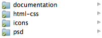
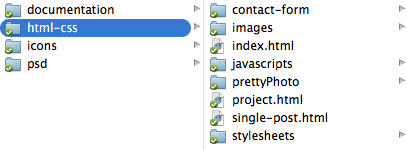
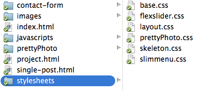
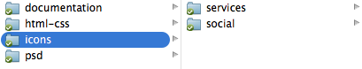
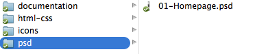

Thank you for purchasing my theme. If you have any questions that are beyond the scope of this help file, please feel free to email via my user page contact form themeforest.net/user/rodbor or rodbor.ticksy.com
Thanks so much!
Unzip your donwload and you'll find:

documentation - The files you are reading right now.
html-css - All HTML, CSS, JS and PHP files.
Icons - Extra icons.
psd - Photoshop file for extra customization.
A basic knowledge of HTML/CSS is required in order to edit and use the template.
Open the html-css folder:

Here you'll find all HTML, CSS, JS and PHP files that you'll need to edit and add your content.
The index.html, project.html and single-post.html are the ones you'll need to edit.
The template was built using the Skeleton Grid System.
The template uses several CSS files:

base.css - A CSS file from the Skeleton Grid System with generic styles and a CSS reset to control the differences in the various browsers.
flexslider.css - Used by the slider in the work and portfolio section.
layout.css - This is the one you'll want to edit to change, colors, fonts, etc.
prettyPhoto.css - Used by the prettyPhoto plugin in the work and portfolio section.
skeleton.css - Used by the Skeleton Grid System.
slimmenu.css - Used by responsive nav menu bar.
The layout.css file is organized like this:
/***************************************************** 1: Typography ******************************************************/ some code /***************************************************** 2: Buttons ******************************************************/ some code /***************************************************** 3: Generic Styles ******************************************************/ some code etc, etc
If you would like to edit a specific section of the site, simply find the appropriate label in the CSS file, and then scroll down until you find the appropriate style that needs to be edited.
This template imports the following Javascript files, wich you can find in the header section and at the bottom of the HTML pages:
jquery.min.js v1.8.2 - Javascript library that greatly reduces the amount of code that you must write.
jquery.sticky.js - Makes the nav menu bar to sticky to the top of the screen while scrolling.
jquery.inview.js - Enables the parallax effects.
jquery.flexslider.js - Used by the slider on work and portfolio section.
quicksand.js - Used by the sortable portfolio.
sorting.js - Used by the sortable portfolio.
jquery.prettyPhoto.js - Enables the lightbox effects on the work and portfolio section.
smooth-scroll.js - Enables smooth scrolling when clicking on the nav menu items.
nbw-parallax.js - Enables the parallax effects.
jquery.slimmenu.min.js - Used by the responsive nav menu bar, enables dropdown menus too.
jquery.easing.1.3.js - Used by the sortable portfolio.
Open contact-form/process.php and search the code below.
$config['recipients'] = '';
Inside the single quotes enter the email address that you would like to receive the submited form data. For example:
$config['recipients'] = 'me@example.com';
While you are in quform/process.php you should also set the "From" email address, search for the term $config['from'] = ''; and enter an email address inside the single quotes. Any emails you get from the script will appear to be sent from this address. Some web hosts will block emails sent from an email address that is not hosted on their servers, so it's usually a good idea to set this to an email address that has the same domain as the site that the form is hosted on.
$config['from'] = 'company@example.com';
If you want to include your name or company name in the "From" address you can also use the code below.
$config['from'] = array('company@example.com' => 'Company');
The fonts used in this template are from Google Web Fonts:
The fonts are automaticaly loaded from the Google fonts servers. You only need to donwload them for use on the Photoshop file.

In the icons folder you can find some extra icons for the Services section.
Social icons were made using the "relay social icon set", wich you can find too in the folder.
The Contact info icons were made using the iconSweets2 set.
Included is one full layererd and organized Photoshop file:

You'll need a basic knowledge of the Photoshop software in order to edit and customize it.
Don't forget, always save for web, and when copuing hide the background and save as transparent png24.
Once again, thank you so much for purchasing this theme. As I said at the beginning, I'd be glad to help you if you have any questions relating to this theme. No guarantees, but I'll do my best to assist.
Rodrigo Borges